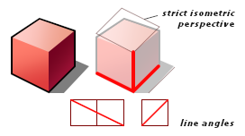
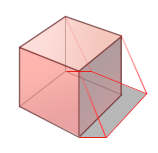

Haiku 图标指南¶
本文讲述了 Haiku 图标的艺术设计细节。如果有些地方的讲解不够清楚，并且在为 Haiku 系统设计图标时不知道该遵循哪种规则，那么请向我们提交该问题。那些已经存在的图标将会向您很好的诠释设计中应该遵循的规范。并且，当您觉得自己设计的图标与系统中其他部分不协调，希望对其进行重新修改时，该文档将会给您提供充分的帮助。
需要注意的是，Haiku 用户非常苛求一致的用户界面。图标的设计和系统其余部分的一致性将增加用户对程序的认可。
透视效果¶
Haiku 图标继承了 BeOS 图标的透视效果，并且添加了自己的特点。如果一个立方体放置在地板上，那么其边缘的角度将会定义如下：立方体左前的面与地板的交线向右倾斜，水平和竖直的像素比为 2:1，右前面与地板的交线向左倾斜，水平和竖直像素比例为 1:1。 竖直线是直的，没有任何的角度以进行透视，Haiku 的图标不同于 BeOS 的部分是修改了非竖直并且不接触地板的线条，添加了一些更加吸引人的透视效果。靠近视角并且和地板接触的拐角边仍然遵循等轴 BeOS 透视，其角度如上所述，所有其他的角度做了稍微的调整以打破严格的等轴试图效果。最重要的东西仍然时保持清脆感，这也是为什么要避免严格定义的透视。但是不要过分的夸大效果 – 尽量使它和其他图标相一致。某些时候，第一步先完成等轴视图的图标，最后在修改其透视效果将会非常容易。我们热切的希望能够保持整个图标的透视效果协调一致。
光源效果¶
Haiku 的图标有两个方向的光源效果。主光源从左上方照射出明亮的中性光。副光源从相反的方向照射带有轻微色彩的环境光（例如，暖色调）。在主光源直接照射的表面上无法看到它的效果。
渐变效果¶
图标上的渐变效果源于上述光源产生的效果。您不需要在每个面上使用渐变效果 – 它们比填充的颜色占用更多的空间，但是如果没有渐变效果，图标看起来非常的僵硬。您应该使用足够的渐变效果以使图标看起来具有现代观感。
通常的规则是，顶部面向观察者的面阴影较淡，并且左边的面的阴影要淡一些。右边的面，没有被主光源直接照射，它们的阴影应该是最暗的。它们被环境光以及地板反射光所照射，但是效果不是很明显，仅仅在近距离观察时才可以发现。在直接接触光照面的地方，它们具有最暗的颜色。总之，颜色应该是明亮的，并作稍微的调整以增加图标的对比度。阴影不一定要和对应的角度对齐以使图标看起来不那么呆板。您应该稍微调整阴影的方位以增加图标的对比度。
色彩效果¶
色彩的掌握明显是难度系数比较大的部分。目前，并没有可供选择的调色板以使您选择主流的图标色彩。已经存在的图标中，纯色是完全避免使用的，除了灰色，它具有恒久的生命力。多数主流的颜色在图标中都呈现深色，但是色彩总是混合的，不是纯红色，绿色或者蓝色。在它们呈现浅色调的地方，多数颜色仍然是饱和的，以利于可靠的光照效果，但是色彩的色调则不同以便在阴影中显示暖色或冷色光效果，而这通常依赖于图标和直觉的轮廓色彩。
阴影效果¶
首先，阴影是立体轮廓在光源方向的投影。由于观察者的透视，投射到地板上的阴影受制于进一步的扭曲变形。
我们鼓励使用图标对象的自投影，因为这样可以提高对比度。有些时候渐变效果也可以提高。我们推荐使用自然阴影，若非这样会增加复杂度，并且会影响主图标。联系人程序的图标是一个简单的自然阴影模型示例。避免在图标右侧留出空间以创建阴影。所有的图标是否具有大致相同的长度并不重要，但是它们必须具有相同的方向：水平向右。和太阳产生的阴影相似，它们并没有从对象处产生更宽的影像。
以上展示的四个图标在其阴影效果方面都有值得称道之处：
对于字体程序的图标，阴影并没有笔直的水平线条，但这是因为 A 字母的形状并没有竖直的边缘。因而阴影所投的方向仍然是向右的。 联系人程序图标的阴影由于曲线的使用而做了简化。 图像查看器图标的阴影位于投影仪之下，那是因为它被提升到了地面之上。 档案管理器图标比其他图标具有更多的自投影效果。需要注意的是，右侧的阴影具有一个不同的方向，这是因为它是由环境光照射产生的。它也可以由渐变效果实现，因为这些阴影通常不具有锋利的边缘。
轮廓线¶
Haiku 图标在其形状轮廓之外使用一个主要的黑色轮廓线。对于 32x32 尺寸的图标，其轮廓线为 1 个像素的宽度。而且当图标发生覆盖时，轮廓线可以将它们区分开来，但是仍然要有节制的加以利用。如果每个边缘都使用，图标看起来会非常复杂。和 BeOS 图标相比，Haiku 的图标使用的轮廓线要少一些。放大镜的图标就是一个很好的示例。 轮廓线有助于增强显示对象的轮廓，但是省略轮廓线和该观点则相反。如果图标的某个特点不应该具有很多的黑色轮廓线以彰显轮廓，那么这些轮廓线应该使用深色的表面所用颜色。文件夹和工作区图标即属于该类示例。对于工作区图标，照明灯的底座非常小因而不足以使用黑色的轮廓线；对于文件夹图标，其中夹带的纸张看起来非常的薄。
高亮效果¶
光滑效果和高亮应该谨慎使用。如果使用过于频繁，图标将会丢失其简化时尚的外观。一些图标在其金属或玻璃表面使用高亮效果，但是仅用于曲线表面（圆形或曲面）。在这些实例中，材质本身就重点支持图标的意义。渐变效果的使用通常会提供足够的空间使图标看起来更加生动形象。
使用覆盖¶
一些系统图标使用覆盖以帮助用户区分不同的文件系统对象。这些对象通常具有同样的类型，并且使用相同的基础图标。许多标准文件夹就是很好的例子。由于覆盖图标需要在 16x16 大小时比较清晰，它们必须是平面符号，非常类似标签。3D对象在这么小的尺寸中非常的模糊。如果您较近的观察，您可能会注意到覆盖并非具有相同的大小，并且所有图标中使用的位置并不相同。而且，它们的覆盖方式为，具有相似角度的线条不进行合并。另外一种使用覆盖的好处是，它们可以提供附加的信息，例如文件格式的某个特别类型。如果可以使用对象来实现覆盖，请尽量避免使用文本标签。
您可能会临时地复制粘贴某些图形来用于覆盖，但是请在最终的图标设计中移除不必要的细节。
细节¶
通常，您应该避免任何对图标表现力没有帮助的无关细节。仅仅能够使图标有趣的细节就已足够。图标通常的大小是 32x32 或 16x16 的尺寸。至于细节的数量，您应该优先考虑 32x32 的尺寸。在这种尺寸中，基本上可以注意到任何的细节。当在图标中重用已经存在的矢量素材时，请注意它的细节可以简化为此种图标尺寸中可以实际看到的内容，否则，该图标将需要很多的存储空间和渲染时间。有些时候，在图标套件的 Min 和 Max LOD 属性的帮助下，去除小图标中的某些细节将会很有帮助。
中立图标¶
您的设计可能会被各种文化和民族背景的群体观看和使用。为了避免任何可能会潜在冒犯其他人的模型设计，作为一项通用准则，所有的 Haiku 图标都设计为文化和种族中立的。我们鼓励图标设计者在设计 Haiku 图标时遵循本规范的要求。